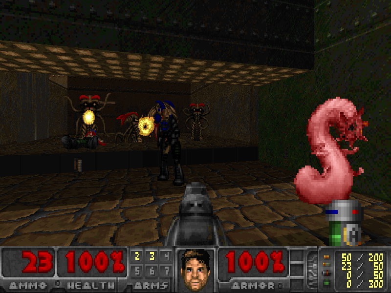

<!DOCTYPE html>
<html>
<title>SLIGE | Doom: Rediscovering History</title>
	<meta charset="utf-8">
	<meta content="OWLY.FANS" property="og:title" />
	<meta content="Because Sometimes Doom is just bad" property="og:description" />
	<meta property="og:image" content="https://owly.fans/floppy.png">
	<meta content="#9B4F96" data-react-helmet="true" name="theme-color" />
    <meta name="keywords" content="owly, cass python, neocities, neozones, brit, uk, archive, site ran by a stud, england, wales">
	<link rel="shortcut icon" type="image/x-icon" href="../../../favicon.ico">
    <link rel="stylesheet" href="../../style.css">
    </html>
	    <body><p><a href="../">Back to index</a></p>
		<h1>SLIGE</h1>
			<hr>
			<p></p>
			<em>Cass &#xAB;Owly&#xBB; Python, 2023-01-13. Published 2024-02-13.</em>
<p>When it comes to AI and computers making anything, most of the time, I think I'm happy with sticking to taking man-made things made over ones made by a dirty little robot that doesn't <em>really</em> know how to tell if what it is making is even good or not. So what I'm saying is that AI is terrible and you should think about unplugging all of your computers in your local library and chucking them all out of the window... well, either that or installing Linux on 'em. I don't judge.</p>

			<p><figure>
        <center><a href="slige.png"></a></center>
					<figcaption><p>This is gonna be a slog, isn't it?</p>
						<p>As playing with <a href="https://freedoom.github.io">Freedoom</a>.</p>
		</figcaption>
		</figure></p>

<p>The <a href="https://doomwiki.org/wiki/SLIGE">Space Llama Interment Gazelle Exper</a> (what a name), SLIGE, was being worked on before you were even born, that being in 1998 with its first build being seen in June of that year. At the time, I guess standards for Doom mapping were so low that, according to <a href="https://doomwiki.org/wiki/Top_10_Infamous_WADs">The Top 10 Infamous WADs</a> the «levels are good enough» some noob level makers would try and «claim as their own».

		
			<p>If you are confused, then SLIGE itself will make you random Doom levels that you can play in a matter of moments with little to no human interference. There have been a few programs like this, one that comes to mind is the very clunky-sounding <a href="https://owlman.neocities.org/owlgames/tools/rws411">Random World Game Development System</a> which is for DOS only. No offence to the authors of these applications or the people who enjoy them as there clearly was an audience for them, at least at the time, but... I really do not see how these are as fun or as enjoyable than finding a Doom WAD off of the <a href="https://doomwiki.org/wiki/Idgames_archive"><span aria-hidden="true">/</span>idgames archive</a> and playing it. This was 1998, <a href="https://doomwiki.org/wiki/1994_level">not the early days of the Doom community where playing anything fan-made was worse than having a vacation in Hell</a>.</p>

<p>I guess I'll never know, but still, let's talk about levels.</p>

<p>A lot of the levels start off with the player in a smallish room with monsters about to attack you, sometimes this can be really unfair, for example, in one level you're expected to kill a hell knight with just a pistol with two lost souls right by them with very little room to slide by and reach a weapon that is in a hallway that is too long. When it comes to monster placement, seemly it is done with very little thought for the player, not as if it matters as a good amount of time, you can just <em>run past</em> monsters with zero consequences as you will rarely ever come back to an area that you just went past.</p>

<p>Well, sometimes you can go back to past areas, but that will usually be down to you making the mistake of picking the wrong direction that will end in a dead-end for you, making you lose most (if not all) of your ammo. Really fun gameplay there guys... <yell>Not</yell>!!! Just a lot of what makes a SLIGE map a <em>SLIGE map</em> is how a lot of the time, well, it's kind of a slog to try and beat any level. Sometimes a level can be stupidly simple and take seconds to finish, while other times you'll be forced to punch the monsters to death. It's just. Unfun. And again, I really do not get how this could be seen as being better than levels made by humans - I've played a lot of old pre-2000 maps, and yeah, a lot are crap, but also, there are many bangers.</p>

<p>Also, another weird thing about SLIGE levels is that when you start most maps, you'll see an explosion sprite for a good half of a second just in the middle of the room that you're in. I have no idea why this is here - kind of a telling sign that it was made by this program. Another telling sign that you're playing SLIGE is that there are parts in the map that will, for no reason, be marked as a secret? Odd.</p>

<p>If I had a copy of Doom in 1998, would I want to <em>use</em> SLIGE? Ummm, well, I feel like I would play around with it for a little bit of time for sure as it's a cool idea, but like... there are so many fan-made WADs out there that I can play that are also free, so I would just stick to those.</p>

<p>If you want to play a few maps by The <em>Space Llama Interment Gazelle Exper</em>, then <a href="https://doomwiki.org/wiki/Simon_Howard_(Fraggle)">Simon &#xAB;Fraggle&#xBB; Howard</a> has you covered as you can download a new set of 32 random maps every day from his website: <a href="https://soulsphere.org/hacks/slige">link here</a>.</p>

<p>Downloads for the program are linked below, so enjoy!</p>
<ul>
	<li><a href="slige_20240113.zip">The Fraggle WAD that I played and is in the screenshot</a></li>
	<li><a href="https://web.archive.org/web/20051221084620/http://members.aol.com/dmchess/sligesrc.zip">Download SLIGE via archive.org</a> (<a href="sligesrc.zip">local</a>)</li>
</ul>  
			
			
<p></p>
	<hr>	
<p><strong>Want to support OwlyFans? <a href="/nft/">See our NFTs</a>!</strong>
</p>

	
	<p>Copyright 2024 - <script type="text/javascript">
var today = new Date()
var year = today.getFullYear()
document.write(year)
</script> by Cass &#xAB;Owly&#xBB; Python, licensed under the <a href="../../../license/fopl-mdp-v2" title="The Freedom Owl Public License: Modifications, Distributions, and Private Use Version 2" alt="The Freedom Owl Public License: Modifications, Distributions, and Private Use Version 2">FOPL-MDP V.2</a>. Please see <a href="../../../humans.html">humans.html</a> for full credit and thanks. Peace and love.</p>
<p><font color="black"><center>&#x2605;</center></font></p>
<p>
<div style="text-align:right">
<a href="http://bytemoth.nfshost.com/cd5k-net/tau">&tau;</a>
</p>
</div>
<p></p>
	<script src="../../../ruffle/ruffle.js"></script>
<script src="../../../script.js"></script>
    </body>
</html>